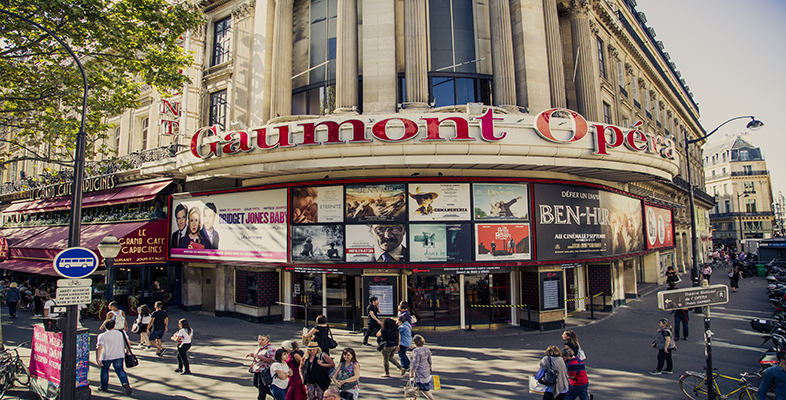

Why where you live in France shapes your cinema experience
Cinema in France
France is home to one of the world’s richest cinematic traditions. But even in this country, access to cinemas is uneven across the territory. Some departments have greater opportunities than others to watch films. But how do the distribution and evolution of cinemas in France influence the population’s access to film culture ?
Access to cinemas in France, an uneven distribution
The distribution of the number of cinemas on the French territory has been relatively stable since 2003 with a minor decrease followed by a minor increase. There were 2,126 cinemas in 2003 and it declined to 2,019 in 2014 and rose to 2,052 in 2024. There is not much of a difference since the 2000.
In 2024, the country had 2052 yet they are distributed pretty unevenly. In Hautes Alpes there are 6,129 inhabitants per cinema whereas in Mayotte it is 128,259 inhabitants per cinema, that’s 20 times more.
Some departments in France have way more opportunities to see films. On one hand Territoire de Belfort has 2 cinemas and on the other hand Paris has 83. This could be explained by the number of people living there.
But Territoire de Belfort has 69,827 residents per cinema and Paris has 25,700. Paris citizens have way more access to film culture than Territoire de Belfort’s.
Our data analysis reveals that the number of cinemas in a department is not linked to the number of residents. It means there could be a department with a large population and very few cinemas, and vice versa.
This shows how the accessibility to film culture is really impacted by the geographical factors.
Calculating all the residents per cinema, we can answer the question “Who really has access to cinemas and film culture”. Hautes-Alpes, Rhône and Savoie are the most well distributed areas, and they all have more than 20 cinemas. Most of the departments with fewer than 10 cinemas don’t have much accessibility.
Cultural diversity and the importance of Art House cinemas
The distribution and accessibility is not the only factor of the unevenness of the film culture in France. It is great to have many cinemas, but what if they all screen the same films ? The film culture is then restricted by diversity not quantity.
In France there is a type of cinema called Art et Essai also known as Art House cinemas. They usually show films made with lower budget or that are less popular. This type of cinema has become more successful in recent years.
In fact, there were only 969 Art House in 2003 then 1,444 in 2014 and finally 1,299 in 2024. The number of Art House cinemas hasn't increased dramatically but it shows the will of offering a wider selection of films to the audience.
People now have better access to films that are not as commercial as the big ones we usually see. Cultural diversity has increased because Art House cinemas now represent 63 percent of French cinemas.
Evolution of the cinema
As we’ve mentioned before, the total number of cinemas has risen since 2003. But not only that, the number of screens in the cinemas has also increased. Cinemas tend to get bigger now than before.
Since 2003, there are more and more cinemas with more than 10 screens. In 2003 there were only 74 cinemas in that case but it rose to 106 in 2014 and then to 128 in 2024.
And in the span of 21 years, the number of cinemas with 5 screens or less has steadily decreased from 1,905 to 1,697.
Evolution also comes with modernization. In 2009 there were only a few cinemas that could show 3D films. Since 3D became a trend in the early 2010s, this number rose rapidly from 98 to 1086 and then increased steadily to reach 1,140 in 2024.
The evolution and modernization of the cinemas has made them more attractive and also capable of serving larger audiences with more screens which increase its accessibility.
The access to film culture depends as much on where you live and what kind of cinema is around. But it has been getting better in recent years with way more Art House cinemas and modernization.